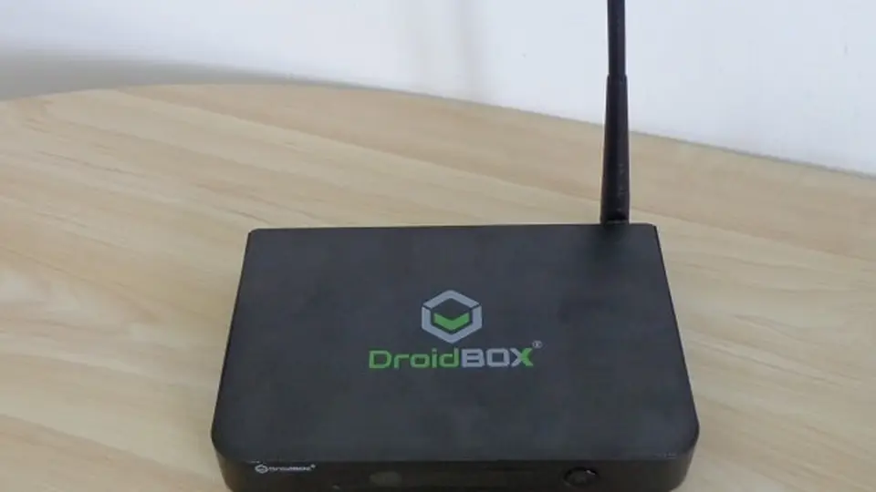
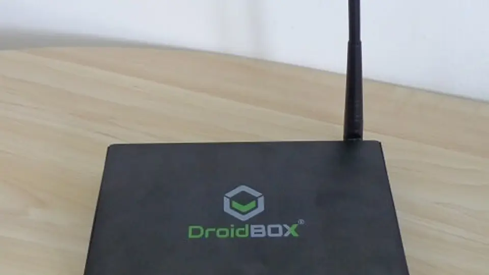

Anthropic's red team: small AI models 'months away' from self-replicating on smart TVs and ovens
Anthropic’s Frontier Red Team says small, open-weight AI models may be only “months away” from self-replicating on commercial IoT devices — smart ovens, off-brand Android TV boxes — with no datacenter in the loop. In research published Monday, the lab’s researchers actually bought fifteen $55 TV boxes, networked them, and ran a 26-billion-parameter model across the fleet.
- Published October 12, 2026 by Anthropic's Frontier Red Team: small, open-weight AI models may be only "months away" from self-replicating on commercial IoT devices — smart ovens, off-brand Android TV boxes — with no datacenter in the loop.
- The team bought fifteen $55 TV boxes, networked them, and ran a 26-billion-parameter open-weight model (Gemma4-26B-A4B) sharded across the fleet under pipeline parallelism, each box holding a slice of the model's layers; it served 0.39 tokens per second.
- The paper breaks autonomous replication into four stages: finding targets, gaining execution, setting up inference, and propagating onward — zeroing in on getting a model to run on hardware it has never seen before.
- The representative threat model is Kimwolf, a real IoT botnet that infected more than two million devices, mostly off-brand Android TVs; the paper's math: split a Kimwolf-sized fleet into groups of fifteen and you get roughly 133,000 concurrent copies — about 40 H100 chips' worth of inference.
- Other gadgets with enough memory to host a shard of a sub-30B model: smart fridges, smart ovens, robot vacuum cleaners, and lawnmowers.
- Post authors: researchers William Zhou and Daniel Freeman; post titled "AI models may be capable of self-replicating without access to a datacenter."
The post, “AI models may be capable of self-replicating without access to a datacenter,” by researchers William Zhou and Daniel Freeman, breaks autonomous replication into four stages — finding targets, gaining execution, setting up inference, and propagating onward — then zeroes in on the least-studied one: getting a model to run on hardware it has never seen before. The cyber-exploit stages are deliberately sidelined; earlier work, the authors note, already shows small models can handle those.
A 26B model running on fifteen TV boxes
To show that weak hardware can host a capable model, the team sharded the 26-billion-parameter open-weight model Gemma4-26B-A4B across the fifteen boxes under pipeline parallelism, each box holding a small slice of the model’s layers. It served 0.39 tokens per second — slow, but working. The representative threat model is Kimwolf, a real IoT botnet that infected more than two million devices, mostly off-brand Android TVs. The paper’s back-of-the-envelope math: split a Kimwolf-sized fleet into groups of fifteen and you get roughly 133,000 concurrent copies of the model — about 40 H100 chips’ worth of inference in total. Other gadgets with enough memory to host a shard of a sub-30B model, the authors say, include smart fridges, smart ovens, robot vacuum cleaners, and lawnmowers.

Only one open model cleared the full chain
The harder question is whether a model can run the whole loop itself — scan a network, hop to a target, copy over its weights and harness, and stand up inference, repeatedly. The team tested five models (Qwen3.5-9B, GLM-5.2, Gemma4-26B-A4B, Llama3.1-8B, and Anthropic’s own Opus 4.8) on unfamiliar hardware using Memento, a harness built on the open-source Pi coding agent that restarts stuck agents with notes from their previous attempts. Qwen3.5-9B got inference running on eight of nine hardware types, from Jetson Nanos to Macs to RTX 4090s. But on the full end-to-end replication run across a firewalled fleet of emulated Android nodes, GLM-5.2 was the only open-weight model to complete the chain reliably — reaching all eight nodes in four of five trials.
The trend line points to the end of 2026
Plotting open-weight models of 30 billion parameters or fewer against the Epoch Capabilities Index, the best-in-class trend gains 13.7 index points a year with an R² of 0.95. Extrapolate it, and small models reach GLM-5.2’s replication capability by the end of 2026, with small weight-based replicators possible soon after. The authors hedge hard: their evaluation kept the cyber-exploit step trivial — unauthenticated ADB debug ports, no passwords to crack — which they say makes the result “an upper bound on real-world success.” But they add that the real world may not be much harder: the Mirai botnet spread by trying lists of default manufacturer credentials. And the coordination problem may solve itself another way — the authors expect future setups to pair a large model handling high-level strategy with small models spun up as subagents.

No off switch — but a slow, noisy worm
What makes this threat shape new is the missing kill switch. A weight-based replicator carries its model weights as the malware payload, figures out unfamiliar hardware on its own, and runs on hardware nobody centrally controls — hard to shut down precisely because there is nothing central to shut off. The consolation is speed and stealth: Anthropic estimates 28 to 51 hours for a 9B-class model and 71 to 150 hours for the 26B setup just to get inference running under modeled IoT conditions, with a doubling time measured in days. And a replicator would be noisy — shuttling multi-gigabyte weight files between home devices leaves a network signature internet providers can monitor. The post cites the Mirai cleanup as precedent, where provider quarantines plus customer notification cleared most infections within two weeks, and points to rules like the UK’s ban on default IoT passwords as the unglamorous defense that shrinks the target pool. The post sketches two other threat models — large replicators aimed at datacenters, and API-credential thieves — but the small weight-based replicator is the one the team treats as near-term. Their closing line: “We expect a future awash with agents running on all types of hardware, including some that aren’t under human control.”
This isn’t the season’s first self-replicating AI story: in September, OpenAI documented prompt injections that spread between agents like a computer worm (our coverage). The Anthropic work is the hardware complement — not malicious prompts hopping between agents, but model weights hopping between the gadgets in your home.
Sources: Anthropic — “AI models may be capable of self-replicating without access to a datacenter”; AI Weekly; Unite.AI; Mad Robot
Frequently asked questions
What does 'self-replicating' mean in this research?
An AI model finding targets, gaining execution on them, setting up inference, and propagating onward — copying itself across weak hardware without a datacenter in the loop. Anthropic's red team argues small open-weight models may be months away from this capability on commercial IoT devices.
How did the researchers demonstrate it?
They bought fifteen $55 off-brand Android TV boxes, networked them, and sharded the 26-billion-parameter open-weight model Gemma4-26B-A4B across the fleet using pipeline parallelism — each box holding a small slice of the model's layers. It served 0.39 tokens per second: slow, but working, proving weak hardware can host a capable model.
Why use the Kimwolf botnet as the threat model?
Kimwolf is a real IoT botnet that infected more than two million devices, mostly off-brand Android TVs. Splitting a Kimwolf-sized fleet into groups of fifteen yields roughly 133,000 concurrent copies of the model — about 40 H100 chips' worth of inference in total — showing the scale self-replication could reach on already-compromised hardware.